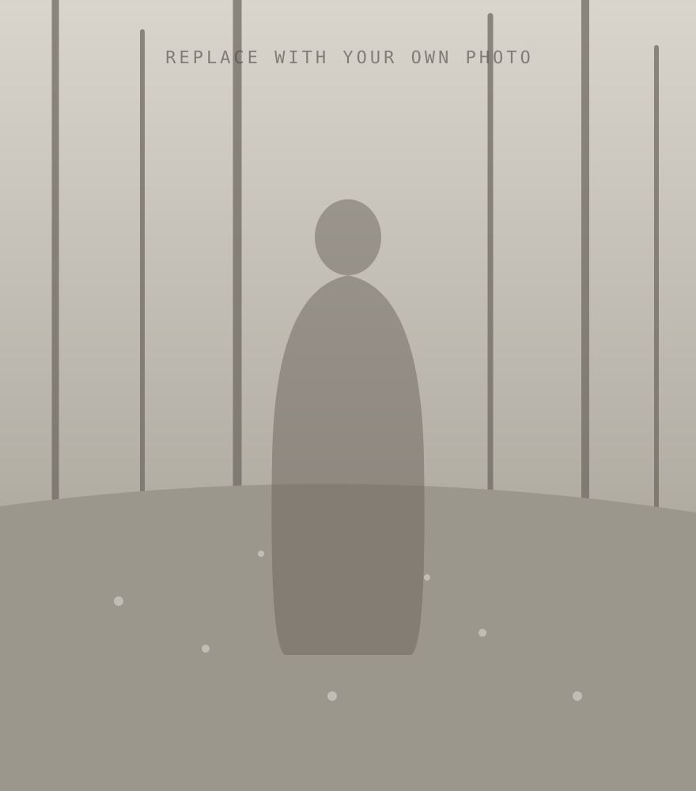

Odderøya fortress · 58.1322° N, 8.0036° E
Experience the attack on Kristiansand, at the place where it happened
Experience the true story of the attack on Kristiansand, outdoors at the place where the defence of the city stood. Hear the answer to the riddle of the French flag, and why Kristiansand's defenders lived in shame after the war ended, with real photographs and accounts from 9 April 1940.
Book a tour- Group size
- 8+ people
- Price
- NOK 150 per person

Your guide
My grandfather wrote a book in 1995
I grew up a short walk from Odderøya, where the gun emplacements are still cut into the rock. What started as curiosity about the concrete in the woods turned into years of digging through war archives, local accounts and the fortifications the Wehrmacht left behind along this coast.
I lead every walk myself, in groups small enough to get inside the tunnels and batteries that bus tours skip. No script read off a card. Just the ground, the structures still standing there, and the history that explains why they are there.
The history
Watch the dramatic story
Book a tour
Book your walk through history
Get in touch to book the guided tour on Odderøya. I will contact you and arrange a time that suits you.